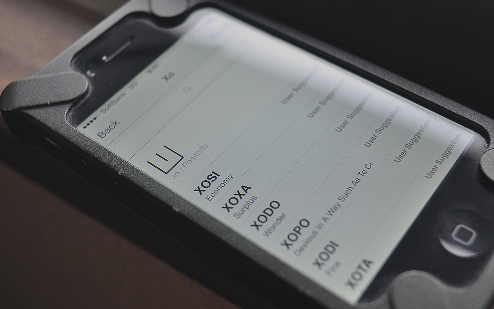
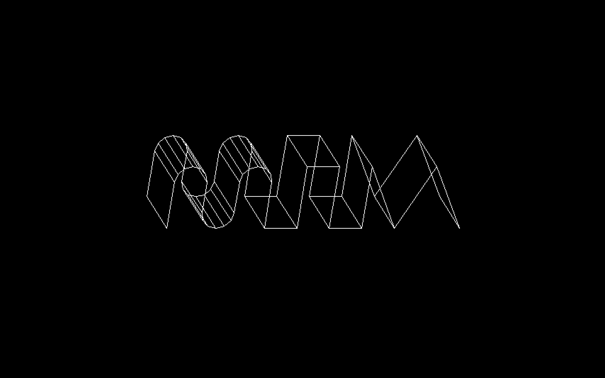

canada — Sailing to Saturnaplaydate — Varvara PPU on the Playdatecanada — Forest Fires Smoke, in Salt Spring IIcanada — Forest Fires Smoke, in Salt Spring Ialicef — Cosmic Metal Versiontheme — Uxn Themingsnarf — Because snarf is what it doesufx format — Proportional Fonts in Uxnorca — Orca Uxn Releasedexe — Dexe Uxn Releasesoies — Soies Cannalnasu — Nasu Uxn Releasenasu — Nasu Uxn Prototype IInoodle — Noodle in Uxnleft — Uxntal drawing routinesnasu — Nasu Uxn Prototype Iroms — We are now in the osdev businessradio — Baofeng UV-9R+busy doing nothing — The Logbook Bookuxn — Uxn Stickerdito — Dito Desktop Releaseleft — Working on Oscean with Leftorigami — Gyro 6origami — Sonobe 30origami — Sonobe 3origami — Sonobe 12noton — Noton Releasereform — Reform Oledwiktopher — Tent City of Renateayatori — Ayatori Notebookidentity — Made In Mooglelongtermism — Brass Faucetspacetime 6502 — Spacetime 6502